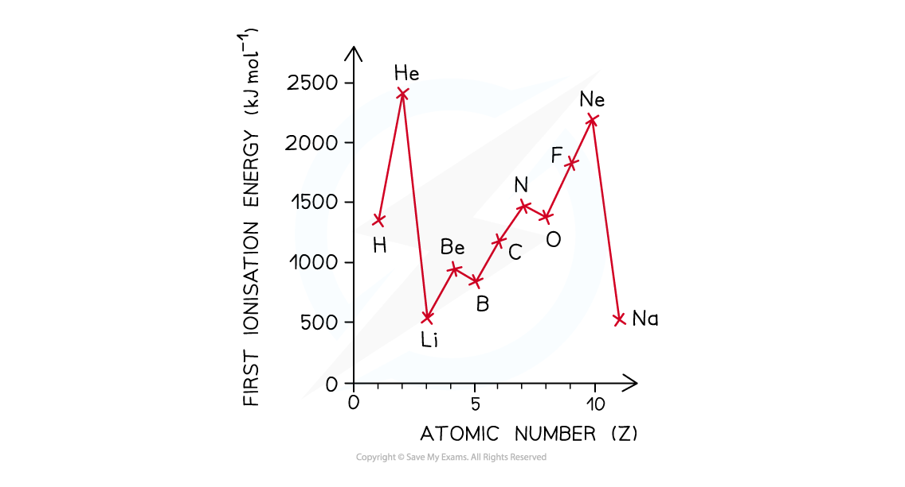
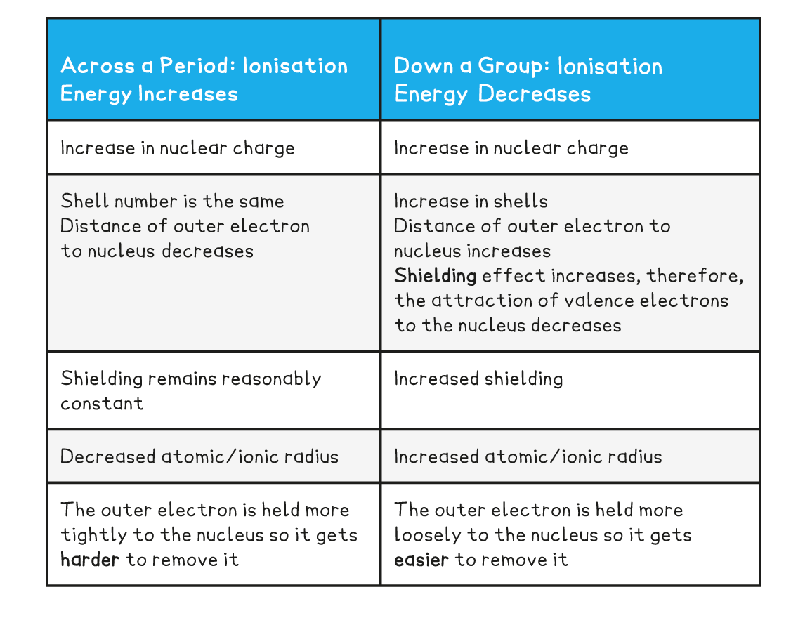
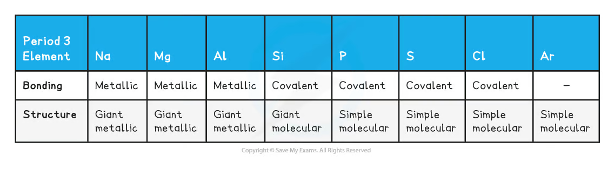
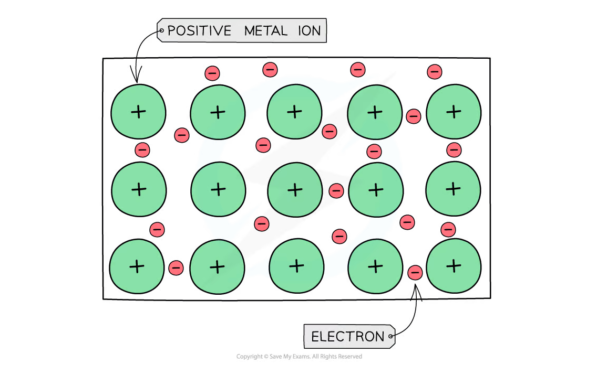
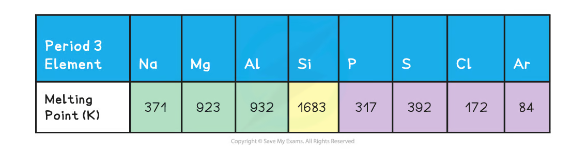
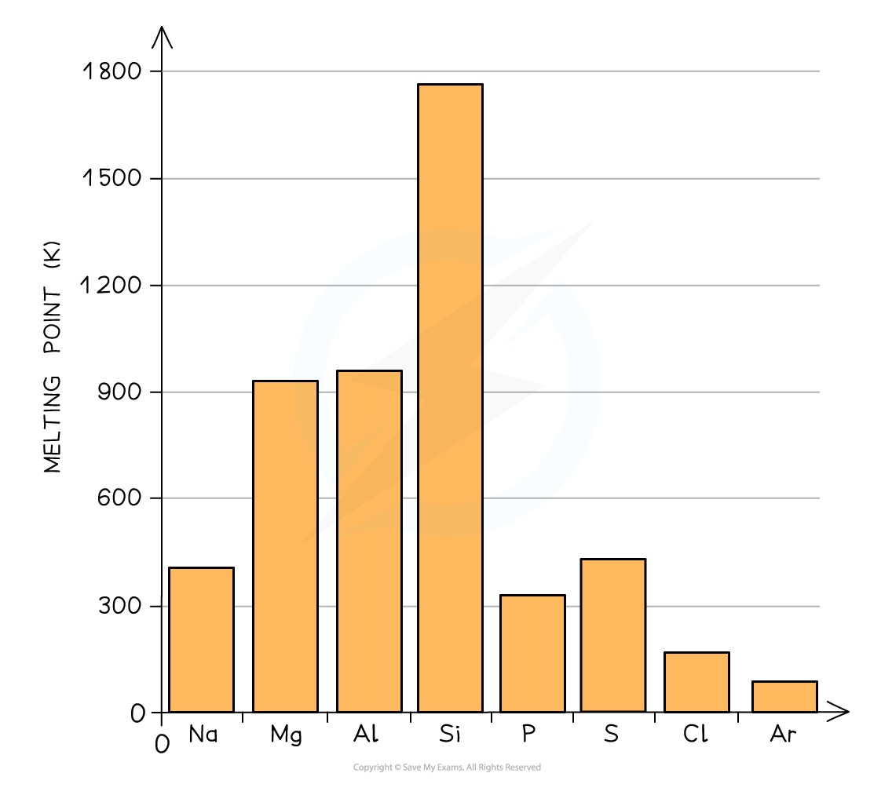

1.5 The Periodic Table
Periodicity, ionisation energy and thermal trends
1.5 The Periodic Table
本页对应 1.5 The Periodic Table.pdf.pdf，整理 periodicity、ionisation energy trends，以及 Period 3 的 melting point、bonding 和 structure。专业词汇保留 English，重点训练用 electronic structure 解释 periodic trends。
Learning objectives
学完本页后，你应该能够：
- describe the arrangement of elements into periods、groups and blocks；
- explain first ionisation-energy trends across a period and down a group；
- explain the small dips in first ionisation energy between Groups 2/3 and 5/6；
- relate Period 3 melting points to metallic、giant covalent and simple molecular structures；
- use bonding、structure、delocalised electrons and intermolecular forces to explain thermal trends。
Periodicity and the Periodic Table
Periodicity means repeating patterns in the physical and chemical properties of elements when they are arranged in order of increasing atomic number。
- A period is a horizontal row。Elements in the same period have the same number of occupied principal shells。
- A group is a vertical column。Main-group elements in the same group have the same number of outer-shell electrons and similar chemical properties。
- The
s、p、dandfblocks show the subshell being filled by the highest-energy electron。

The Periodic Table is arranged by increasing atomic number from left to right. The position of an element therefore reflects its electron configuration and helps predict its reactivity、bonding and physical properties。
1.5.1 Periodicity - Ionisation Energy
First ionisation energy
The first ionisation energy is the enthalpy change required to remove one electron from each atom in one mole of gaseous atoms：
\[ \ce{X(g) -> X+(g) + e-} \]
It is measured in kJ mol⁻¹。A high first ionisation energy means the outer electron is held strongly by the nucleus。
Across a period
First ionisation energy generally increases across a period because：
- nuclear charge increases as the number of protons increases；
- the outer electron is added to the same principal shell；
- shielding remains approximately constant because no new inner shell is added；
- the attraction between the nucleus and the outer electron therefore increases。
The first ionisation-energy graph for Periods 2 and 3 shows the overall upward trend：

The dip between Groups 2 and 3
There is a small decrease from Group 2 to Group 3：
\[ \ce{Be}:1s^2 2s^2\qquad\ce{B}:1s^2 2s^2 2p^1 \]
The electron removed from boron is in a 2p subshell，which is higher in energy and slightly further from the nucleus than the 2s electron removed from beryllium. It is therefore easier to remove，so the first ionisation energy of boron is lower than expected。
The same explanation applies to aluminium compared with magnesium：
\[ \ce{Mg}:[Ne]3s^2\qquad\ce{Al}:[Ne]3s^2 3p^1 \]
The dip between Groups 5 and 6
There is a small decrease from Group 5 to Group 6 because one orbital in the Group 6 p subshell contains a pair of electrons：
\[ \ce{N}:1s^2 2s^2 2p_x^1 2p_y^1 2p_z^1 \]
\[ \ce{O}:1s^2 2s^2 2p_x^2 2p_y^1 2p_z^1 \]
The paired 2p electrons repel one another，so one electron in oxygen is easier to remove than an electron from nitrogen’s half-filled 2p subshell。
Down a group
First ionisation energy generally decreases down a group because：
- the number of occupied shells increases；
- the outer electron is further from the nucleus；
- shielding by inner-shell electrons increases；
- the attraction between the positive nucleus and outer electron decreases。
The increase in nuclear charge is outweighed by the increased distance and shielding。

Trend summary
| Direction | Overall trend | Main explanation |
|---|---|---|
| Across a period | First ionisation energy increases | Increasing nuclear charge，same shell，similar shielding |
| Down a group | First ionisation energy decreases | More shells，greater distance and increased shielding |
| Group 2 to Group 3 | Small decrease | Electron removed from a higher-energy p subshell |
| Group 5 to Group 6 | Small decrease | Paired-electron repulsion in a p orbital |
1.5.2 Periodicity - Thermal Trends
Period 3 elements
Period 3 runs from sodium to argon：
\[ \ce{Na, Mg, Al, Si, P, S, Cl, Ar} \]
The elements change from metals to a giant covalent element and then to simple molecular / monatomic non-metals：
| Elements | Bonding and structure |
|---|---|
Na, Mg, Al |
Metallic bonding，giant metallic lattice |
Si |
Strong covalent bonds，giant covalent structure |
P |
Simple molecular P₄ |
S |
Simple molecular S₈ |
Cl |
Simple molecular Cl₂ |
Ar |
Monatomic，only weak intermolecular forces |

Metallic bonding
In a metal，positive metal ions are arranged in a regular lattice and surrounded by delocalised electrons。The electrostatic attraction between the positive ions and delocalised electrons is metallic bonding。

Across Na → Mg → Al：
- the metal ions have increasing positive charge；
- the ionic radius decreases slightly；
- the number of delocalised electrons per atom increases；
- metallic bonding becomes stronger。
This explains the increase in melting point from sodium to magnesium and aluminium。
Melting-point data


Explaining the trend
Sodium to aluminium
The melting points increase from Na to Mg to Al because metallic bonding becomes stronger。Each aluminium atom contributes more delocalised electrons and forms a more highly charged ion than sodium。
Silicon
Silicon has a giant covalent structure。Many strong covalent bonds extend throughout the lattice，so a large amount of energy is required to melt it. This gives silicon a much higher melting point than the metals Na、Mg and Al。
Phosphorus to argon
After silicon，the structure changes to simple molecular or monatomic substances。Melting does not break the strong covalent bonds inside each molecule；it overcomes the weaker intermolecular forces between molecules。
P₄has stronger London dispersion forces than the smallerCl₂molecule because it has more electrons and a larger electron cloud。S₈is larger thanP₄and has stronger London dispersion forces，so sulfur has a higher melting point than phosphorus。Cl₂is smaller thanS₈，so its intermolecular forces are weaker and its melting point is lower。- Argon is monatomic and has the fewest electrons in this section，so it has the weakest London dispersion forces and the lowest melting point。
Melting and boiling points
The same structural explanations apply to boiling points，but boiling requires particles to separate completely into a gas。Therefore，the energy required is usually greater than for melting。
When writing an exam explanation，identify the structure first，then identify the force or bond that must be overcome，and finally connect the force to the trend in energy。
Exam-answer structure
Structure → bonding / force → strength → energy required → physical property.
Example：Al has more delocalised electrons and more highly charged metal ions than Mg，so its metallic bonding is stronger；more energy is required to overcome the bonding，therefore Al has the higher melting point。
Common mistakes and exam checklist
Source note
本页面对应：Note per Chapter/Note per Chapter/1.5 The Periodic Table.pdf.pdf。页面中的 Periodic Table、ionisation-energy graph/table、Period 3 melting-point data、bonding/structure table 和 metallic-bonding diagram 均从该 PDF 的 embedded images 独立提取，并转换为 RGB white-background PNG 后保存到 assets/notes/periodic-table/。